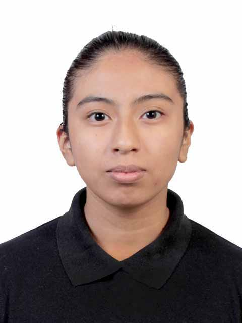

Itzel Cervantes Cruz
Datos Generales
Cédula: 444-2221110-8
Dirección: San Marcial
Celular: 299-562-4258
Email: Itchel521@gmail.com
Etusios Realizados
Estudios primarios: Escuela primaria Orizaba
Estudios secundarios: Ugmex
Estudios preparatorios: Ugmex
Idiomas Dominados
Español
Algo de Ingles